7 탐색적 데이터 분석
7.1 들어가기
이 장에서는 데이터를 체계적으로 탐색하기 위해 시각화 및 탐색을 활용하는 과정을 보여준다. 통계학자들은 이 작업을 탐색적 데이터 분석 또는 간단히 EDA (Exploratory Data Analysis)라고 부르며, EDA는 다음과 같은 반복적인 작업으로 이루어져 있다.
데이터에 대한 질문을 만든다.
데이터를 시각화, 변환 및 모델링하여 질문에 대한 답을 찾는다.
질문을 개선하거나 새로운 질문을 만들기 위해 학습한 방법을 사용한다.
EDA는 엄격한 규칙을 가진 형식적인 과정이 아니다. 무엇보다도 EDA는 사고하는 상태이다. EDA의 초기 단계에서는 떠오르는 모든 아이디어를 마음껏 탐색해야 한다. 아이디어 중 일부는 진행될 것이고, 일부는 난관에 부딪힐 것이다. 이러한 탐색을 지속하면 결국에는 스스로 작성한 것 중 사람들과 소통할 수 있는 몇 가지 생산적인 영역으로 집중하게 될 것이다.
질문이 주어진다고 해도 데이터의 품질은 항상 조사해야 하므로 EDA는 모든 데이터 분석에서 중요한 부분을 차지한다. 데이터 정제는 EDA의 한 가지 적용일 뿐이며 데이터가 여러분의 기대를 충족하는지 질문한다. 데이터를 정제하기 위해서는 EDA의 모든 도구(시각화, 변환 및 모델링)를 사용해야 한다.
7.1.1 준비하기
이 장에서는 dplyr과 ggplot2에 대해 배운 내용을 질문하기, 데이터로 답하기 및 새롭게 질문하는 과정과 결합할 것이다.
library(tidyverse)7.2 Questions
“판에 박힌 통계적 질문은 없으며 오직 의심스러운 통계적 질문만이 있다.” — 데이빗 콕스 경 (Sir David Cox)
“꼼꼼하게 만들어진 잘못된 질문에 대해 정확한 대답을 하는 것보다, 모호하지만 올바른 질문에 근사적인 대답을 하는 것이 훨씬 낫다.” — 존 튜키
EDA의 목표는 데이터를 이해하는 것이다. 이를 위한 가장 쉬운 방법은 탐색을 위한 도구로 질문을 사용하는 것이다. 질문을 하면 데이터셋의 특정 부분에 집중하며 어떤 그래프, 어떤 모델을 만들지 또는 어떤 변환을 할지 결정하는 데 도움을 준다.
EDA는 근본적으로 창의적인 과정이다. 대부분의 창의적인 과정과 유사하게 우수한 문제를 묻는 것의 핵심은 많은 양의 질문을 생성하는 것이다. 분석의 시작 단계에서는 데이터셋에 어떤 통찰력이 포함되어 있는지 알 수 없기 때문에 흥미로운 질문을 하는 것은 어렵다. 그렇지만 각각의 새로운 질문들은 자신을 데이터의 새로운 측면에 노출시키고 발견할 기회를 증가시킨다. 스스로 발견한 것을 토대로 만든 새로운 질문들을 따라가다 보면, 데이터의 가장 흥미로운 부분을 신속하게 분석하고, 시사하는 바가 큰 질문을 발굴할 수 있다.
탐색을 위해 어떤 질문을 해야 하는가에 대한 규칙은 없다. 그렇지만 데이터 에서 발굴할 수 있는 언제나 유용한 두 가지 유형의 질문이 있으며, 다음과 같은 질문들을 시도해볼 수 있다.
변수 내에서 어떤 유형의 변동이 발생하는가?
변수 간에 어떤 유형의 공변동이 발생하는가?
이 장의 남은 부분에서는 이 두 가지 질문에 대해 살펴볼 것이다. 변동과 공변동에 대해 설명하고 각 질문에 대한 몇 가지 답변을 제시할 것이다. 논의를 쉽게 하기 위해 몇 가지 용어를 정의하고자 한다.
변수(variable)는 측정할 수 있는 양, 질 또는 속성이다.
값(value)은 변수가 측정될 때의 상태이다. 변수의 값은 측정에 따라 변할 수 있다.
관측값(observation)(또는 사례(case))은 유사한 조건에서 측정된 값들의 집합이다 (일반적으로 동시에 같은 대상에 대해 모든 관측된 값을 사용한다.). 관측값은 서로 다른 변수가 조합된 다양한 값을 포함한다. 관측값을 데이터 포인트라고 부르기도 한다.
테이블 형식의 데이터(Tabular data)는 각 변수들과 관측값의 조합인 값들의 집합이다. 테이블 형식의 데이터는 각 값은 ‘셀’에, 변수들은 열에, 관측값은 행에 있을 때 타이디(tidy)하다고 한다. 지금까지 보았던 모든 데이터는 타이디 데이터였다. 실제로 데이터 대부분은 타이디하지 않기 때문에 tidy data에서는 이 부분에 대해 다시 다룰 것이다.
7.3 변동
Variation is the tendency of the values of a variable to change from measurement to measurement. You can see variation easily in real life; if you measure any continuous variable twice, you will get two different results. This is true even if you measure quantities that are constant, like the speed of light. Each of your measurements will include a small amount of error that varies from measurement to measurement. Categorical variables can also vary if you measure across different subjects (e.g. the eye colors of different people), or different times (e.g. the energy levels of an electron at different moments). Every variable has its own pattern of variation, which can reveal interesting information. The best way to understand that pattern is to visualise the distribution of the variable’s values.
7.3.1 분포 시각화
How you visualise the distribution of a variable will depend on whether the variable is categorical or continuous. A variable is categorical if it can only take one of a small set of values. In R, categorical variables are usually saved as factors or character vectors. To examine the distribution of a categorical variable, use a bar chart:
ggplot(data = diamonds) +
geom_bar(mapping = aes(x = cut))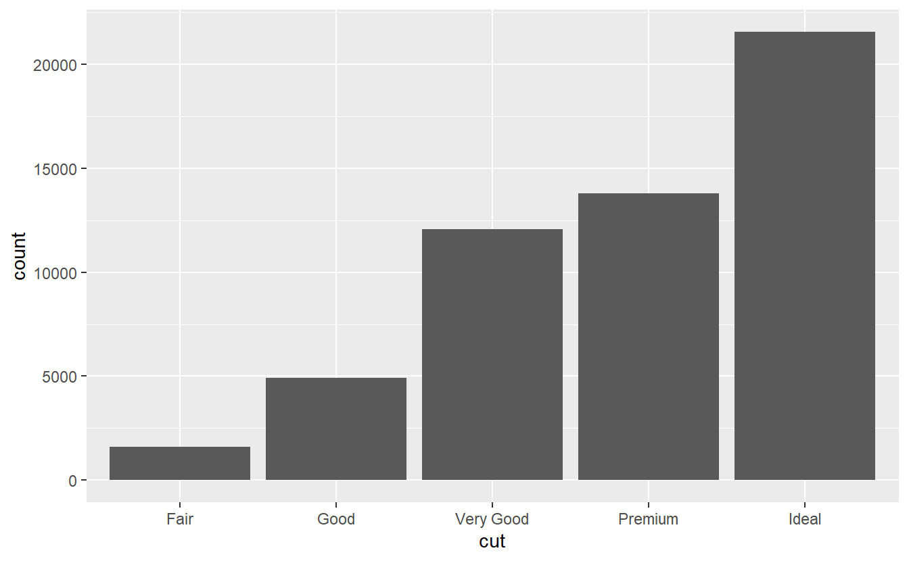
The height of the bars displays how many observations occurred with each x value. You can compute these values manually with dplyr::count():
diamonds %>%
count(cut)
#> # A tibble: 5 x 2
#> cut n
#> <ord> <int>
#> 1 Fair 1610
#> 2 Good 4906
#> 3 Very Good 12082
#> 4 Premium 13791
#> 5 Ideal 21551A variable is continuous if it can take any of an infinite set of ordered values. Numbers and date-times are two examples of continuous variables. To examine the distribution of a continuous variable, use a histogram:
ggplot(data = diamonds) +
geom_histogram(mapping = aes(x = carat), binwidth = 0.5)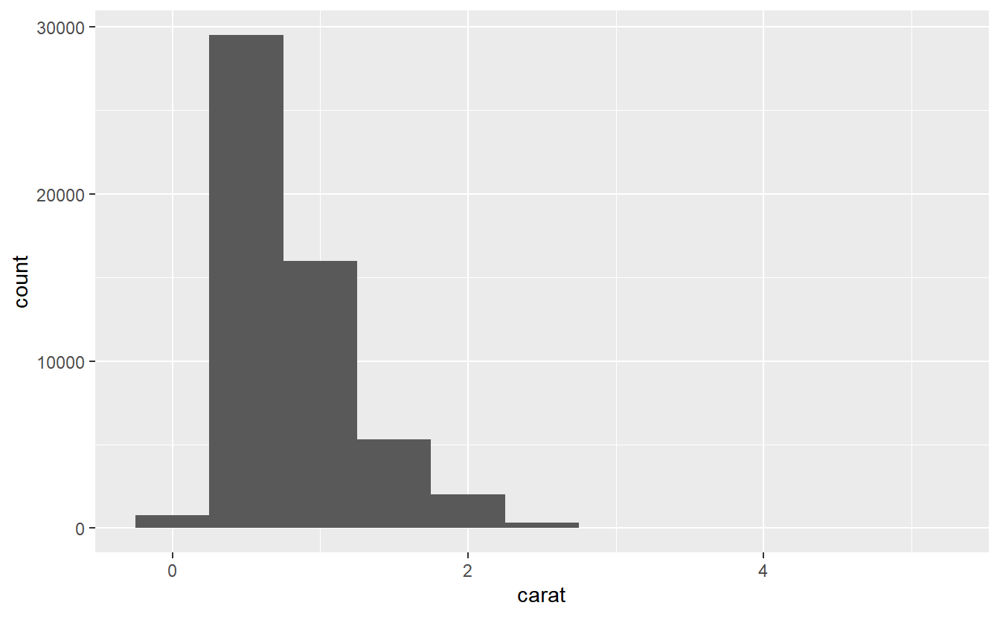
You can compute this by hand by combining dplyr::count() and ggplot2::cut_width():
diamonds %>%
count(cut_width(carat, 0.5))
#> # A tibble: 11 x 2
#> `cut_width(carat, 0.5)` n
#> <fct> <int>
#> 1 [-0.25,0.25] 785
#> 2 (0.25,0.75] 29498
#> 3 (0.75,1.25] 15977
#> 4 (1.25,1.75] 5313
#> 5 (1.75,2.25] 2002
#> 6 (2.25,2.75] 322
#> # ... with 5 more rowsA histogram divides the x-axis into equally spaced bins and then uses the height of a bar to display the number of observations that fall in each bin. In the graph above, the tallest bar shows that almost 30,000 observations have a carat value between 0.25 and 0.75, which are the left and right edges of the bar.
You can set the width of the intervals in a histogram with the binwidth argument, which is measured in the units of the x variable. You should always explore a variety of binwidths when working with histograms, as different binwidths can reveal different patterns. For example, here is how the graph above looks when we zoom into just the diamonds with a size of less than three carats and choose a smaller binwidth.
smaller <- diamonds %>%
filter(carat < 3)
ggplot(data = smaller, mapping = aes(x = carat)) +
geom_histogram(binwidth = 0.1)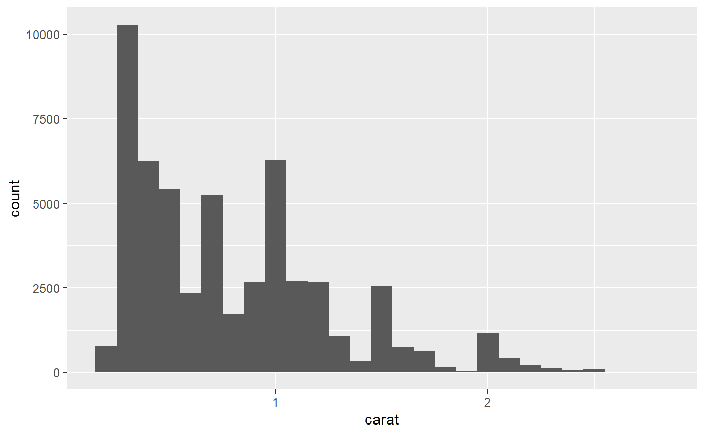
If you wish to overlay multiple histograms in the same plot, I recommend using geom_freqpoly() instead of geom_histogram(). geom_freqpoly() performs the same calculation as geom_histogram(), but instead of displaying the counts with bars, uses lines instead. It’s much easier to understand overlapping lines than bars.
ggplot(data = smaller, mapping = aes(x = carat, colour = cut)) +
geom_freqpoly(binwidth = 0.1)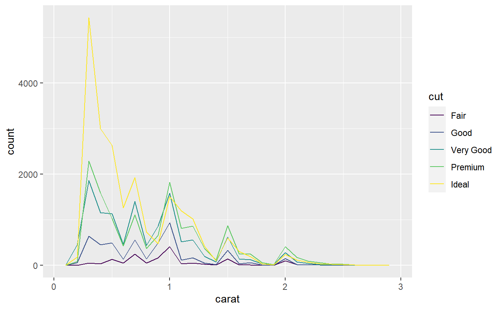
There are a few challenges with this type of plot, which we will come back to in visualising a categorical and a continuous variable.
Now that you can visualise variation, what should you look for in your plots? And what type of follow-up questions should you ask? I’ve put together a list below of the most useful types of information that you will find in your graphs, along with some follow-up questions for each type of information. The key to asking good follow-up questions will be to rely on your curiosity (What do you want to learn more about?) as well as your skepticism (How could this be misleading?).
7.3.2 Typical values
In both bar charts and histograms, tall bars show the common values of a variable, and shorter bars show less-common values. Places that do not have bars reveal values that were not seen in your data. To turn this information into useful questions, look for anything unexpected:
Which values are the most common? Why?
Which values are rare? Why? Does that match your expectations?
Can you see any unusual patterns? What might explain them?
As an example, the histogram below suggests several interesting questions:
Why are there more diamonds at whole carats and common fractions of carats?
Why are there more diamonds slightly to the right of each peak than there are slightly to the left of each peak?
Why are there no diamonds bigger than 3 carats?
ggplot(data = smaller, mapping = aes(x = carat)) +
geom_histogram(binwidth = 0.01)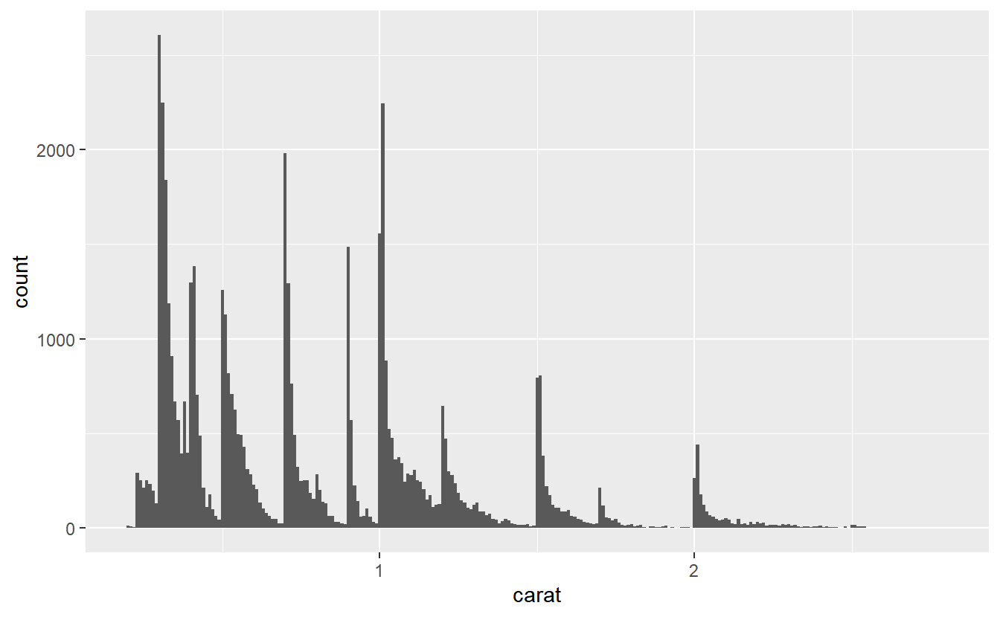
Clusters of similar values suggest that subgroups exist in your data. To understand the subgroups, ask:
How are the observations within each cluster similar to each other?
How are the observations in separate clusters different from each other?
How can you explain or describe the clusters?
Why might the appearance of clusters be misleading?
The histogram below shows the length (in minutes) of 272 eruptions of the Old Faithful Geyser in Yellowstone National Park. Eruption times appear to be clustered into two groups: there are short eruptions (of around 2 minutes) and long eruptions (4-5 minutes), but little in between.
ggplot(data = faithful, mapping = aes(x = eruptions)) +
geom_histogram(binwidth = 0.25)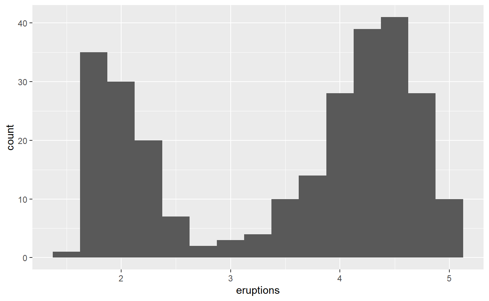
Many of the questions above will prompt you to explore a relationship between variables, for example, to see if the values of one variable can explain the behavior of another variable. We’ll get to that shortly.
7.3.3 Unusual values
Outliers are observations that are unusual; data points that don’t seem to fit the pattern. Sometimes outliers are data entry errors; other times outliers suggest important new science. When you have a lot of data, outliers are sometimes difficult to see in a histogram. For example, take the distribution of the y variable from the diamonds dataset. The only evidence of outliers is the unusually wide limits on the x-axis.
ggplot(diamonds) +
geom_histogram(mapping = aes(x = y), binwidth = 0.5)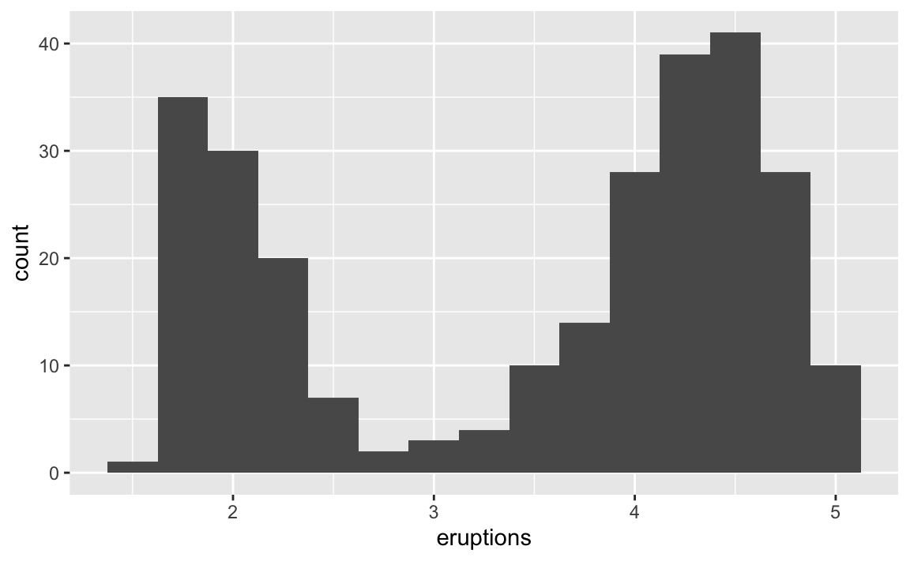
There are so many observations in the common bins that the rare bins are so short that you can’t see them (although maybe if you stare intently at 0 you’ll spot something). To make it easy to see the unusual values, we need to zoom to small values of the y-axis with coord_cartesian():
ggplot(diamonds) +
geom_histogram(mapping = aes(x = y), binwidth = 0.5) +
coord_cartesian(ylim = c(0, 50))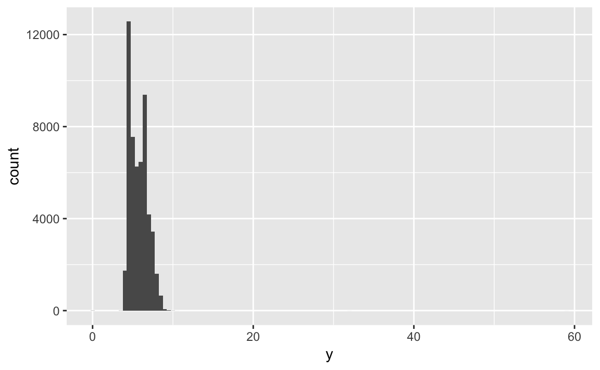
(coord_cartesian() also has an xlim() argument for when you need to zoom into the x-axis. ggplot2 also has xlim() and ylim() functions that work slightly differently: they throw away the data outside the limits.)
This allows us to see that there are three unusual values: 0, ~30, and ~60. We pluck them out with dplyr:
unusual <- diamonds %>%
filter(y < 3 | y > 20) %>%
select(price, x, y, z) %>%
arrange(y)
unusual
#> # A tibble: 9 x 4
#> price x y z
#> <int> <dbl> <dbl> <dbl>
#> 1 5139 0 0 0
#> 2 6381 0 0 0
#> 3 12800 0 0 0
#> 4 15686 0 0 0
#> 5 18034 0 0 0
#> 6 2130 0 0 0
#> 7 2130 0 0 0
#> 8 2075 5.15 31.8 5.12
#> 9 12210 8.09 58.9 8.06The y variable measures one of the three dimensions of these diamonds, in mm. We know that diamonds can’t have a width of 0mm, so these values must be incorrect. We might also suspect that measurements of 32mm and 59mm are implausible: those diamonds are over an inch long, but don’t cost hundreds of thousands of dollars!
It’s good practice to repeat your analysis with and without the outliers. If they have minimal effect on the results, and you can’t figure out why they’re there, it’s reasonable to replace them with missing values, and move on. However, if they have a substantial effect on your results, you shouldn’t drop them without justification. You’ll need to figure out what caused them (e.g. a data entry error) and disclose that you removed them in your write-up.
7.3.4 Exercises
Explore the distribution of each of the
x,y, andzvariables indiamonds. What do you learn? Think about a diamond and how you might decide which dimension is the length, width, and depth.Explore the distribution of
price. Do you discover anything unusual or surprising? (Hint: Carefully think about thebinwidthand make sure you try a wide range of values.)How many diamonds are 0.99 carat? How many are 1 carat? What do you think is the cause of the difference?
Compare and contrast
coord_cartesian()vsxlim()orylim()when zooming in on a histogram. What happens if you leavebinwidthunset? What happens if you try and zoom so only half a bar shows?
7.4 Missing values
If you’ve encountered unusual values in your dataset, and simply want to move on to the rest of your analysis, you have two options.
Drop the entire row with the strange values:
diamonds2 <- diamonds %>% filter(between(y, 3, 20))I don’t recommend this option because just because one measurement is invalid, doesn’t mean all the measurements are. Additionally, if you have low quality data, by time that you’ve applied this approach to every variable you might find that you don’t have any data left!
Instead, I recommend replacing the unusual values with missing values. The easiest way to do this is to use
mutate()to replace the variable with a modified copy. You can use theifelse()function to replace unusual values withNA:diamonds2 <- diamonds %>% mutate(y = ifelse(y < 3 | y > 20, NA, y))
ifelse() has three arguments. The first argument test should be a logical vector. The result will contain the value of the second argument, yes, when test is TRUE, and the value of the third argument, no, when it is false. Alternatively to ifelse, use dplyr::case_when(). case_when() is particularly useful inside mutate when you want to create a new variable that relies on a complex combination of existing variables.
Like R, ggplot2 subscribes to the philosophy that missing values should never silently go missing. It’s not obvious where you should plot missing values, so ggplot2 doesn’t include them in the plot, but it does warn that they’ve been removed:
ggplot(data = diamonds2, mapping = aes(x = x, y = y)) +
geom_point()
#> Warning: Removed 9 rows containing missing values (geom_point).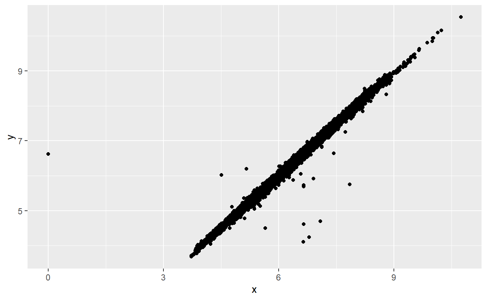
To suppress that warning, set na.rm = TRUE:
ggplot(data = diamonds2, mapping = aes(x = x, y = y)) +
geom_point(na.rm = TRUE)Other times you want to understand what makes observations with missing values different to observations with recorded values. For example, in nycflights13::flights, missing values in the dep_time variable indicate that the flight was cancelled. So you might want to compare the scheduled departure times for cancelled and non-cancelled times. You can do this by making a new variable with is.na().
nycflights13::flights %>%
mutate(
cancelled = is.na(dep_time),
sched_hour = sched_dep_time %/% 100,
sched_min = sched_dep_time %% 100,
sched_dep_time = sched_hour + sched_min / 60
) %>%
ggplot(mapping = aes(sched_dep_time)) +
geom_freqpoly(mapping = aes(colour = cancelled), binwidth = 1/4)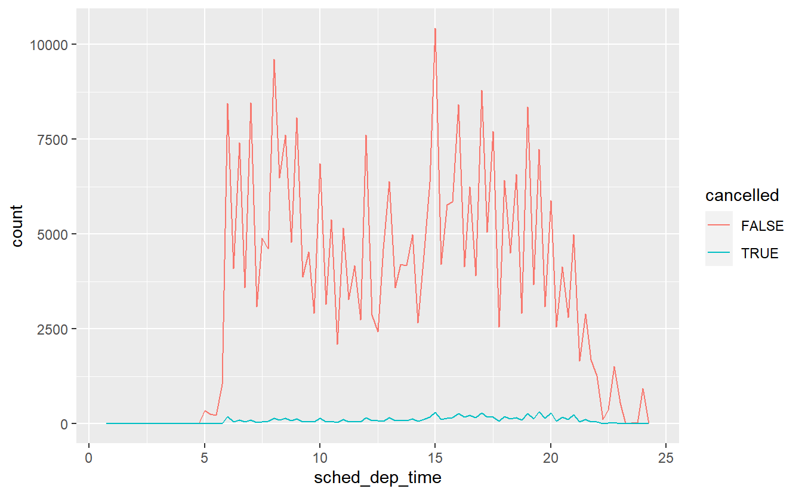
However this plot isn’t great because there are many more non-cancelled flights than cancelled flights. In the next section we’ll explore some techniques for improving this comparison.
7.4.1 Exercises
What happens to missing values in a histogram? What happens to missing values in a bar chart? Why is there a difference?
What does
na.rm = TRUEdo inmean()andsum()?
7.5 Covariation
If variation describes the behavior within a variable, covariation describes the behavior between variables. Covariation is the tendency for the values of two or more variables to vary together in a related way. The best way to spot covariation is to visualise the relationship between two or more variables. How you do that should again depend on the type of variables involved.
7.5.1 A categorical and continuous variable
It’s common to want to explore the distribution of a continuous variable broken down by a categorical variable, as in the previous frequency polygon. The default appearance of geom_freqpoly() is not that useful for that sort of comparison because the height is given by the count. That means if one of the groups is much smaller than the others, it’s hard to see the differences in shape. For example, let’s explore how the price of a diamond varies with its quality:
ggplot(data = diamonds, mapping = aes(x = price)) +
geom_freqpoly(mapping = aes(colour = cut), binwidth = 500)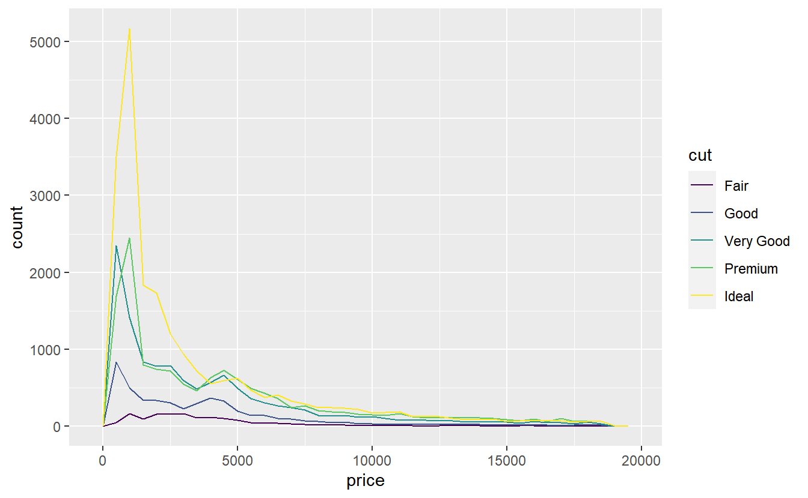
It’s hard to see the difference in distribution because the overall counts differ so much:
ggplot(diamonds) +
geom_bar(mapping = aes(x = cut))
To make the comparison easier we need to swap what is displayed on the y-axis. Instead of displaying count, we’ll display density, which is the count standardised so that the area under each frequency polygon is one.
ggplot(data = diamonds, mapping = aes(x = price, y = ..density..)) +
geom_freqpoly(mapping = aes(colour = cut), binwidth = 500)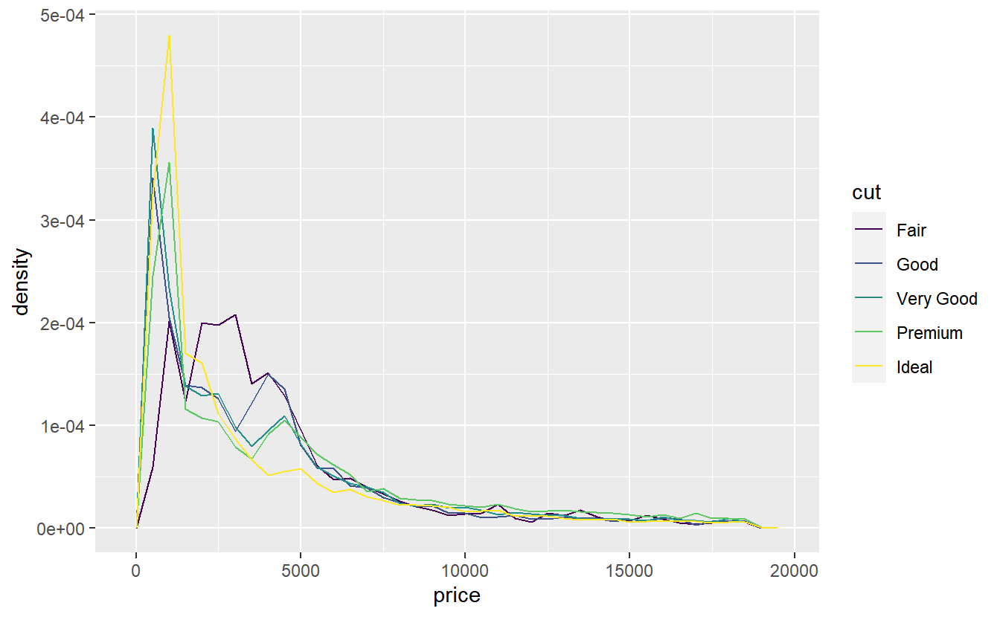
There’s something rather surprising about this plot - it appears that fair diamonds (the lowest quality) have the highest average price! But maybe that’s because frequency polygons are a little hard to interpret - there’s a lot going on in this plot.
Another alternative to display the distribution of a continuous variable broken down by a categorical variable is the boxplot. A boxplot is a type of visual shorthand for a distribution of values that is popular among statisticians. Each boxplot consists of:
A box that stretches from the 25th percentile of the distribution to the 75th percentile, a distance known as the interquartile range (IQR). In the middle of the box is a line that displays the median, i.e. 50th percentile, of the distribution. These three lines give you a sense of the spread of the distribution and whether or not the distribution is symmetric about the median or skewed to one side.
Visual points that display observations that fall more than 1.5 times the IQR from either edge of the box. These outlying points are unusual so are plotted individually.
A line (or whisker) that extends from each end of the box and goes to the
farthest non-outlier point in the distribution.

Let’s take a look at the distribution of price by cut using geom_boxplot():
ggplot(data = diamonds, mapping = aes(x = cut, y = price)) +
geom_boxplot()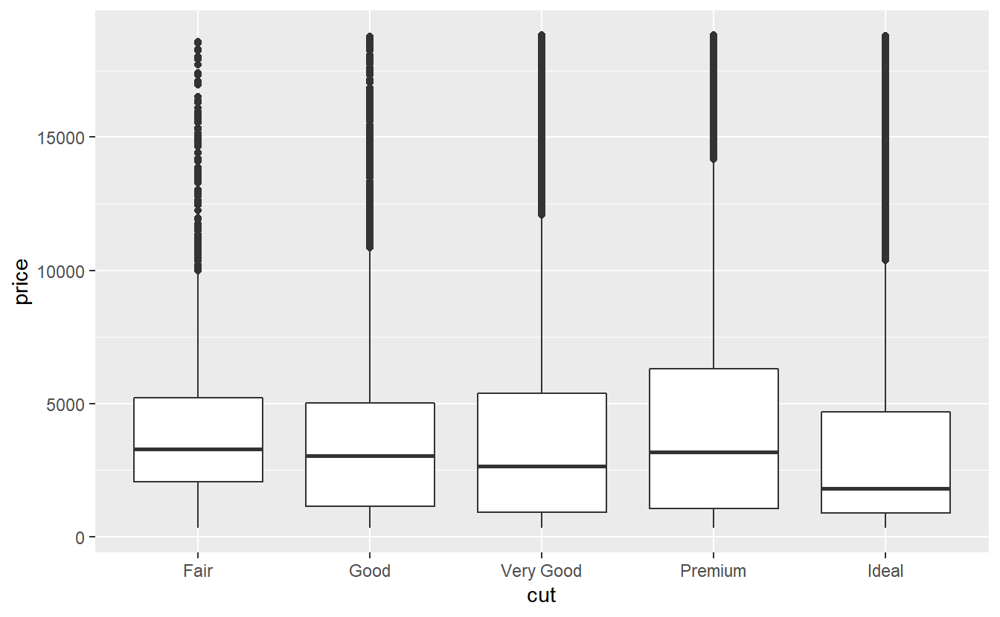
We see much less information about the distribution, but the boxplots are much more compact so we can more easily compare them (and fit more on one plot). It supports the counterintuitive finding that better quality diamonds are cheaper on average! In the exercises, you’ll be challenged to figure out why.
cut is an ordered factor: fair is worse than good, which is worse than very good and so on. Many categorical variables don’t have such an intrinsic order, so you might want to reorder them to make a more informative display. One way to do that is with the reorder() function.
For example, take the class variable in the mpg dataset. You might be interested to know how highway mileage varies across classes:
ggplot(data = mpg, mapping = aes(x = class, y = hwy)) +
geom_boxplot()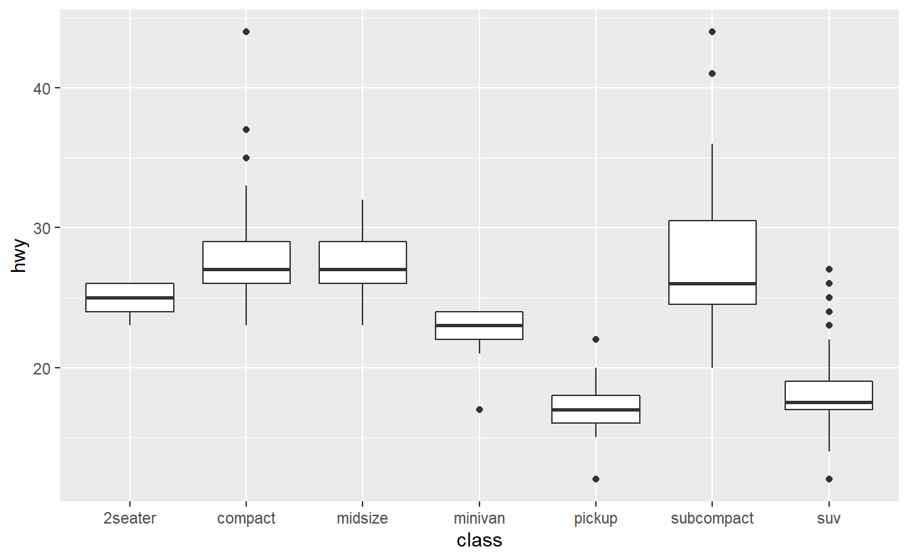
To make the trend easier to see, we can reorder class based on the median value of hwy:
ggplot(data = mpg) +
geom_boxplot(mapping = aes(x = reorder(class, hwy, FUN = median), y = hwy))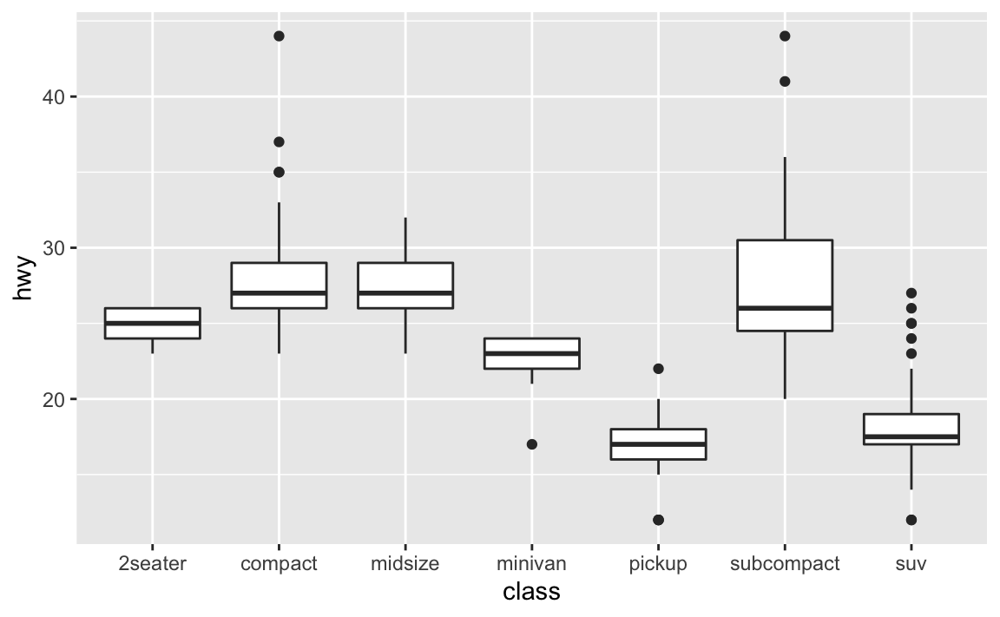
If you have long variable names, geom_boxplot() will work better if you flip it 90°. You can do that with coord_flip().
ggplot(data = mpg) +
geom_boxplot(mapping = aes(x = reorder(class, hwy, FUN = median), y = hwy)) +
coord_flip()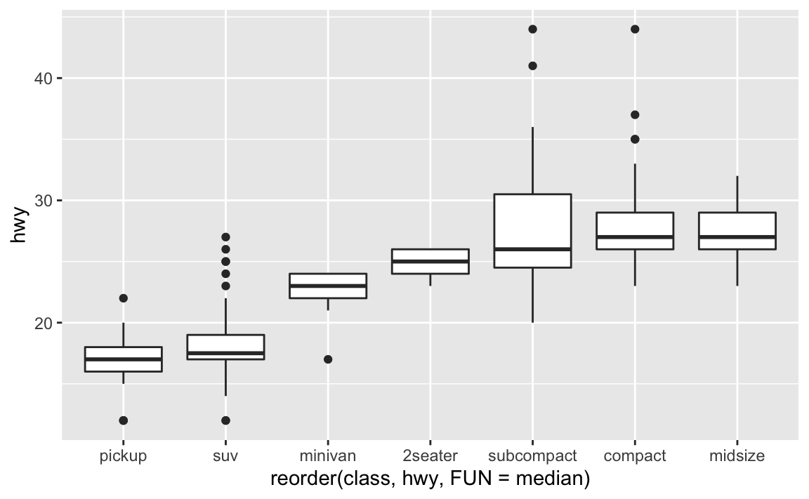
7.5.1.1 Exercises
Use what you’ve learned to improve the visualisation of the departure times of cancelled vs. non-cancelled flights.
What variable in the diamonds dataset is most important for predicting the price of a diamond? How is that variable correlated with cut? Why does the combination of those two relationships lead to lower quality diamonds being more expensive?
Install the ggstance package, and create a horizontal boxplot. How does this compare to using
coord_flip()?One problem with boxplots is that they were developed in an era of much smaller datasets and tend to display a prohibitively large number of “outlying values”. One approach to remedy this problem is the letter value plot. Install the lvplot package, and try using
geom_lv()to display the distribution of price vs cut. What do you learn? How do you interpret the plots?Compare and contrast
geom_violin()with a facettedgeom_histogram(), or a colouredgeom_freqpoly(). What are the pros and cons of each method?If you have a small dataset, it’s sometimes useful to use
geom_jitter()to see the relationship between a continuous and categorical variable. The ggbeeswarm package provides a number of methods similar togeom_jitter(). List them and briefly describe what each one does.
7.5.2 Two categorical variables
To visualise the covariation between categorical variables, you’ll need to count the number of observations for each combination. One way to do that is to rely on the built-in geom_count():
ggplot(data = diamonds) +
geom_count(mapping = aes(x = cut, y = color))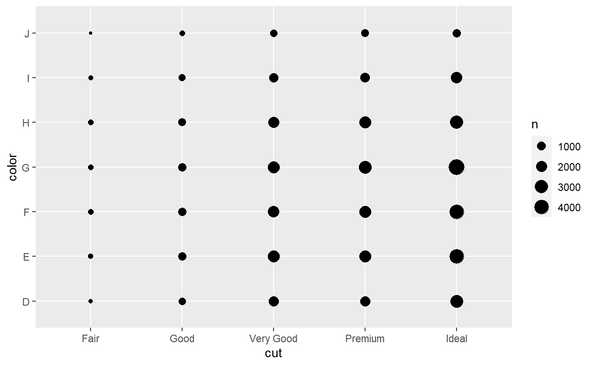
The size of each circle in the plot displays how many observations occurred at each combination of values. Covariation will appear as a strong correlation between specific x values and specific y values.
Another approach is to compute the count with dplyr:
diamonds %>%
count(color, cut)
#> # A tibble: 35 x 3
#> color cut n
#> <ord> <ord> <int>
#> 1 D Fair 163
#> 2 D Good 662
#> 3 D Very Good 1513
#> 4 D Premium 1603
#> 5 D Ideal 2834
#> 6 E Fair 224
#> # ... with 29 more rowsThen visualise with geom_tile() and the fill aesthetic:
diamonds %>%
count(color, cut) %>%
ggplot(mapping = aes(x = color, y = cut)) +
geom_tile(mapping = aes(fill = n))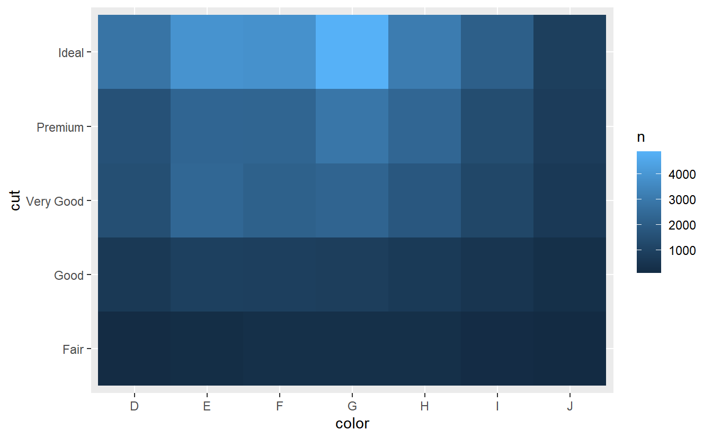
If the categorical variables are unordered, you might want to use the seriation package to simultaneously reorder the rows and columns in order to more clearly reveal interesting patterns. For larger plots, you might want to try the d3heatmap or heatmaply packages, which create interactive plots.
7.5.2.1 Exercises
How could you rescale the count dataset above to more clearly show the distribution of cut within colour, or colour within cut?
Use
geom_tile()together with dplyr to explore how average flight delays vary by destination and month of year. What makes the plot difficult to read? How could you improve it?Why is it slightly better to use
aes(x = color, y = cut)rather thanaes(x = cut, y = color)in the example above?
7.5.3 Two continuous variables
You’ve already seen one great way to visualise the covariation between two continuous variables: draw a scatterplot with geom_point(). You can see covariation as a pattern in the points. For example, you can see an exponential relationship between the carat size and price of a diamond.
ggplot(data = diamonds) +
geom_point(mapping = aes(x = carat, y = price))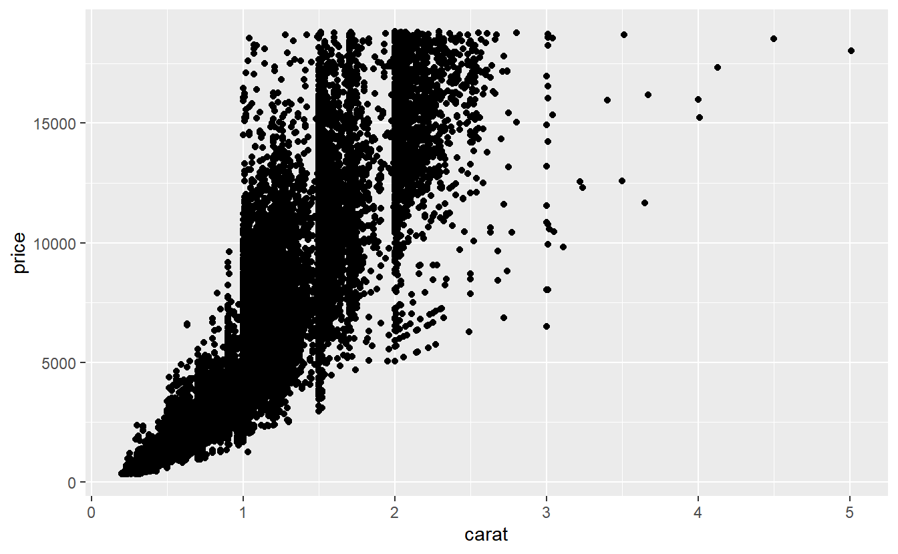
Scatterplots become less useful as the size of your dataset grows, because points begin to overplot, and pile up into areas of uniform black (as above).
You’ve already seen one way to fix the problem: using the alpha aesthetic to add transparency.
ggplot(data = diamonds) +
geom_point(mapping = aes(x = carat, y = price), alpha = 1 / 100)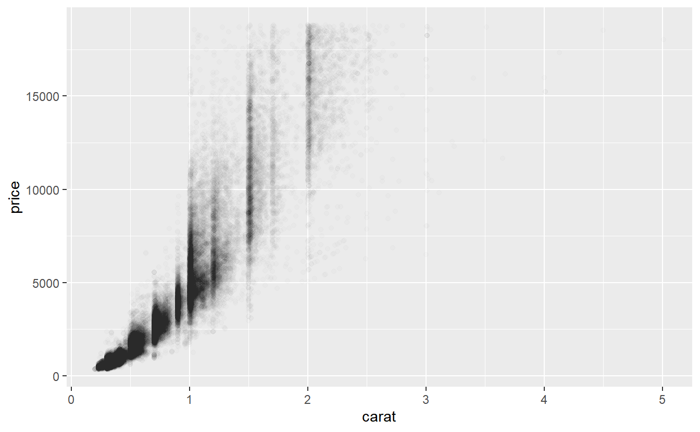
But using transparency can be challenging for very large datasets. Another solution is to use bin. Previously you used geom_histogram() and geom_freqpoly() to bin in one dimension. Now you’ll learn how to use geom_bin2d() and geom_hex() to bin in two dimensions.
geom_bin2d() and geom_hex() divide the coordinate plane into 2d bins and then use a fill color to display how many points fall into each bin. geom_bin2d() creates rectangular bins. geom_hex() creates hexagonal bins. You will need to install the hexbin package to use geom_hex().
ggplot(data = smaller) +
geom_bin2d(mapping = aes(x = carat, y = price))
# install.packages("hexbin")
ggplot(data = smaller) +
geom_hex(mapping = aes(x = carat, y = price))
#> Warning: Computation failed in `stat_binhex()`:
#> The `hexbin` package is required for `stat_binhex()`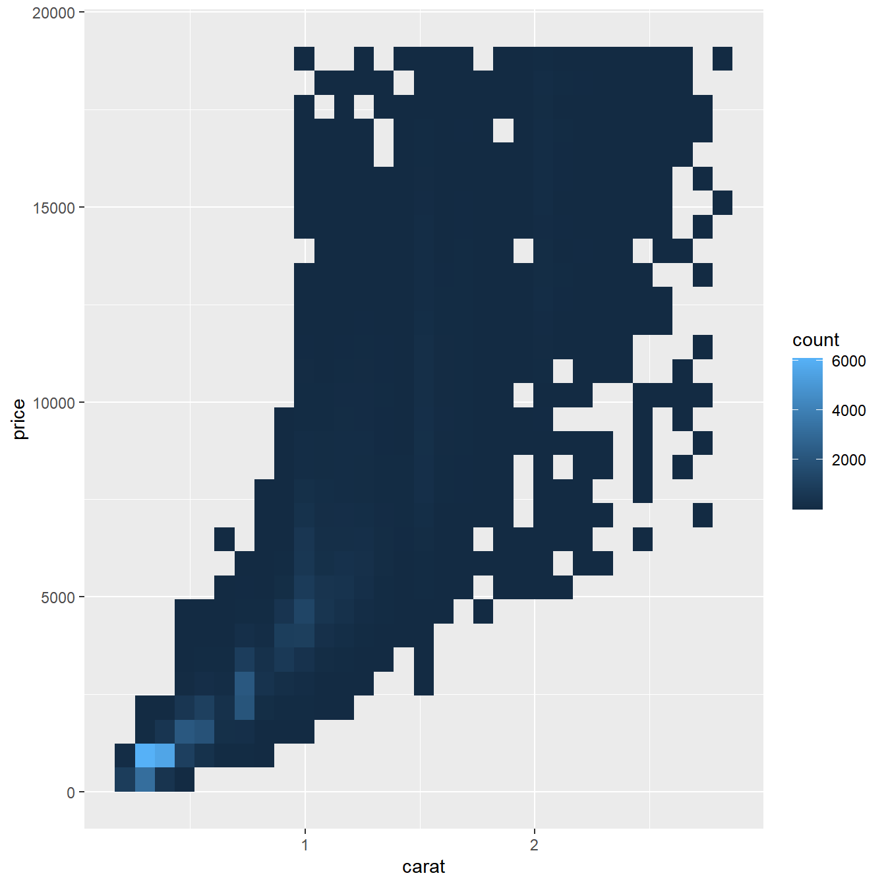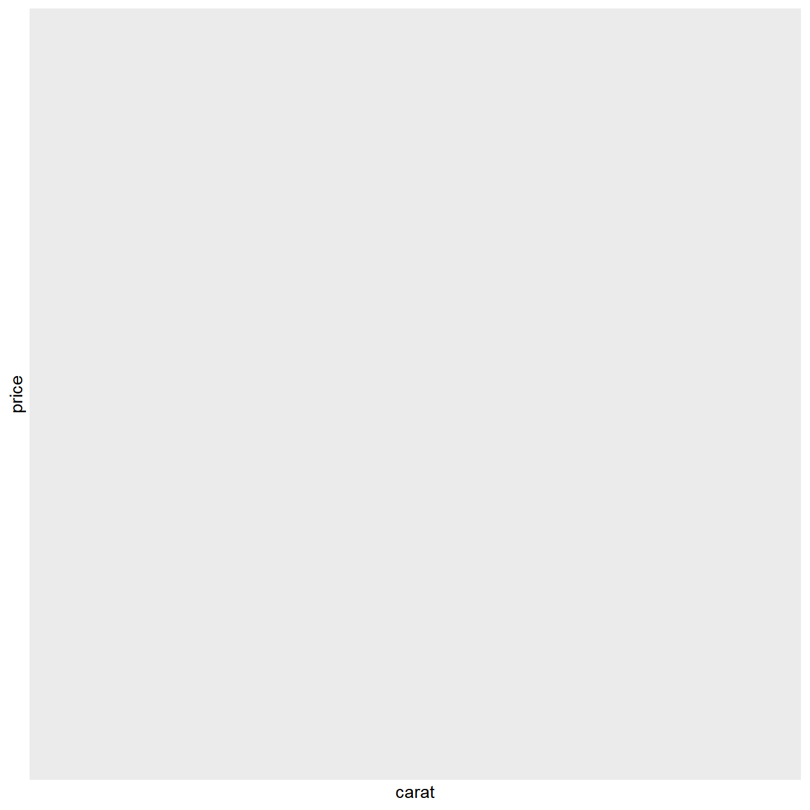
Another option is to bin one continuous variable so it acts like a categorical variable. Then you can use one of the techniques for visualising the combination of a categorical and a continuous variable that you learned about. For example, you could bin carat and then for each group, display a boxplot:
ggplot(data = smaller, mapping = aes(x = carat, y = price)) +
geom_boxplot(mapping = aes(group = cut_width(carat, 0.1)))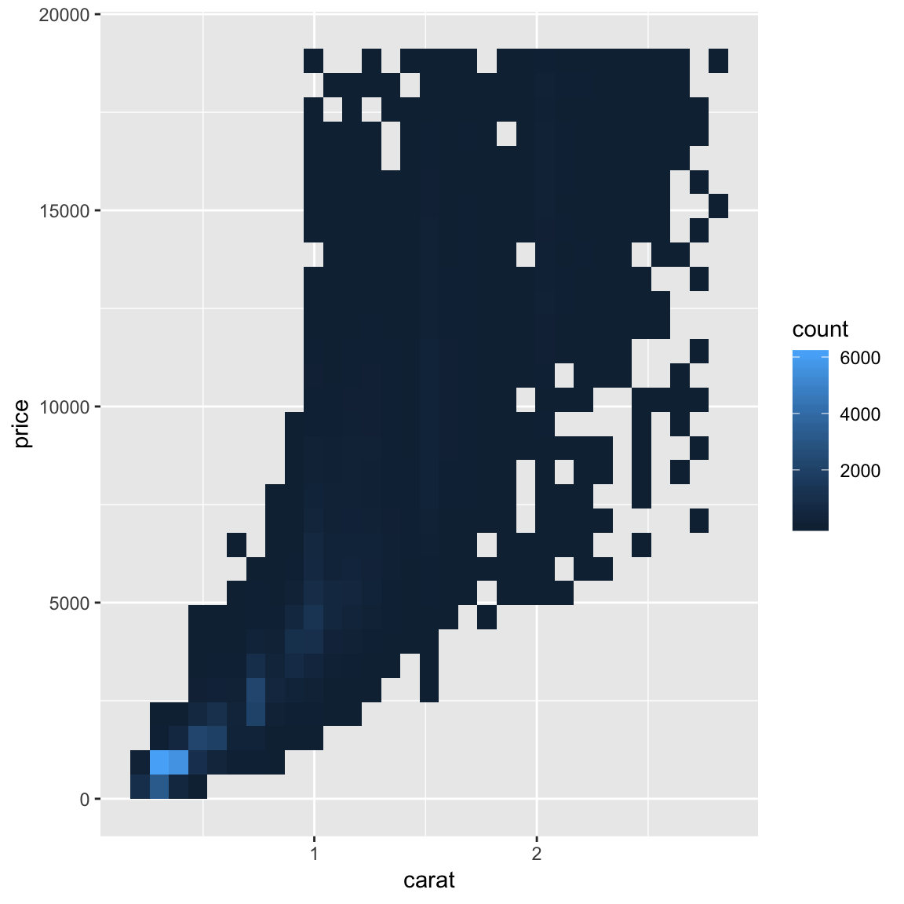
cut_width(x, width), as used above, divides x into bins of width width. By default, boxplots look roughly the same (apart from number of outliers) regardless of how many observations there are, so it’s difficult to tell that each boxplot summarises a different number of points. One way to show that is to make the width of the boxplot proportional to the number of points with varwidth = TRUE.
Another approach is to display approximately the same number of points in each bin. That’s the job of cut_number():
ggplot(data = smaller, mapping = aes(x = carat, y = price)) +
geom_boxplot(mapping = aes(group = cut_number(carat, 20)))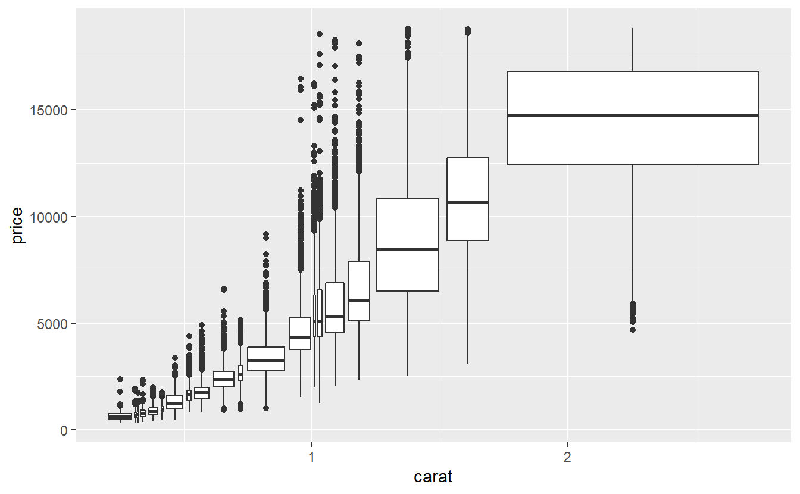
7.5.3.1 Exercises
Instead of summarising the conditional distribution with a boxplot, you could use a frequency polygon. What do you need to consider when using
cut_width()vscut_number()? How does that impact a visualisation of the 2d distribution ofcaratandprice?Visualise the distribution of carat, partitioned by price.
How does the price distribution of very large diamonds compare to small diamonds? Is it as you expect, or does it surprise you?
Combine two of the techniques you’ve learned to visualise the combined distribution of cut, carat, and price.
Two dimensional plots reveal outliers that are not visible in one dimensional plots. For example, some points in the plot below have an unusual combination of
xandyvalues, which makes the points outliers even though theirxandyvalues appear normal when examined separately.ggplot(data = diamonds) + geom_point(mapping = aes(x = x, y = y)) + coord_cartesian(xlim = c(4, 11), ylim = c(4, 11))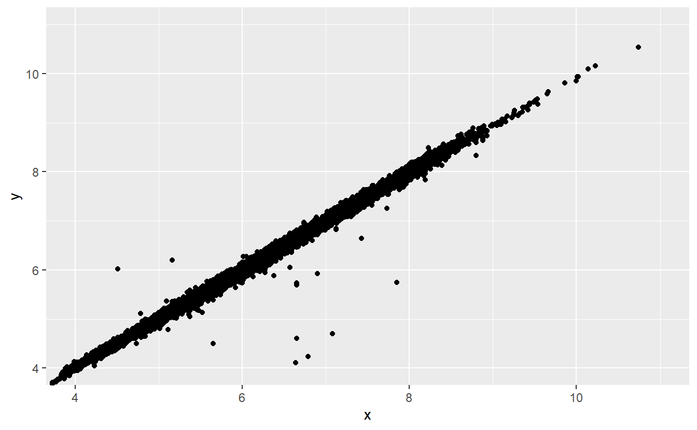
Why is a scatterplot a better display than a binned plot for this case?
7.6 Patterns and models
Patterns in your data provide clues about relationships. If a systematic relationship exists between two variables it will appear as a pattern in the data. If you spot a pattern, ask yourself:
Could this pattern be due to coincidence (i.e. random chance)?
How can you describe the relationship implied by the pattern?
How strong is the relationship implied by the pattern?
What other variables might affect the relationship?
Does the relationship change if you look at individual subgroups of the data?
A scatterplot of Old Faithful eruption lengths versus the wait time between eruptions shows a pattern: longer wait times are associated with longer eruptions. The scatterplot also displays the two clusters that we noticed above.
ggplot(data = faithful) +
geom_point(mapping = aes(x = eruptions, y = waiting))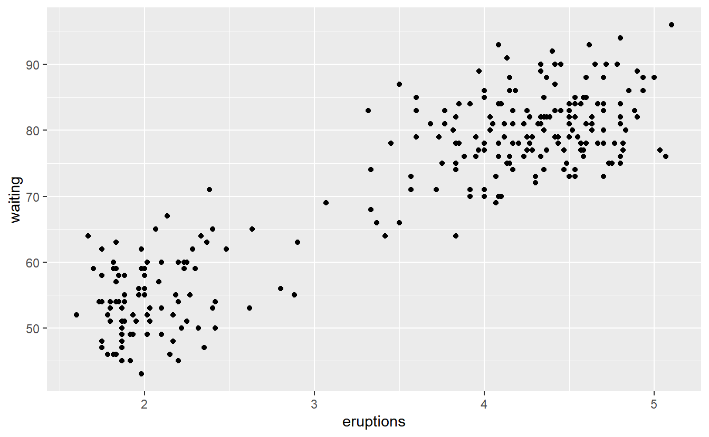
Patterns provide one of the most useful tools for data scientists because they reveal covariation. If you think of variation as a phenomenon that creates uncertainty, covariation is a phenomenon that reduces it. If two variables covary, you can use the values of one variable to make better predictions about the values of the second. If the covariation is due to a causal relationship (a special case), then you can use the value of one variable to control the value of the second.
Models are a tool for extracting patterns out of data. For example, consider the diamonds data. It’s hard to understand the relationship between cut and price, because cut and carat, and carat and price are tightly related. It’s possible to use a model to remove the very strong relationship between price and carat so we can explore the subtleties that remain. The following code fits a model that predicts price from carat and then computes the residuals (the difference between the predicted value and the actual value). The residuals give us a view of the price of the diamond, once the effect of carat has been removed.
library(modelr)
mod <- lm(log(price) ~ log(carat), data = diamonds)
diamonds2 <- diamonds %>%
add_residuals(mod) %>%
mutate(resid = exp(resid))
ggplot(data = diamonds2) +
geom_point(mapping = aes(x = carat, y = resid))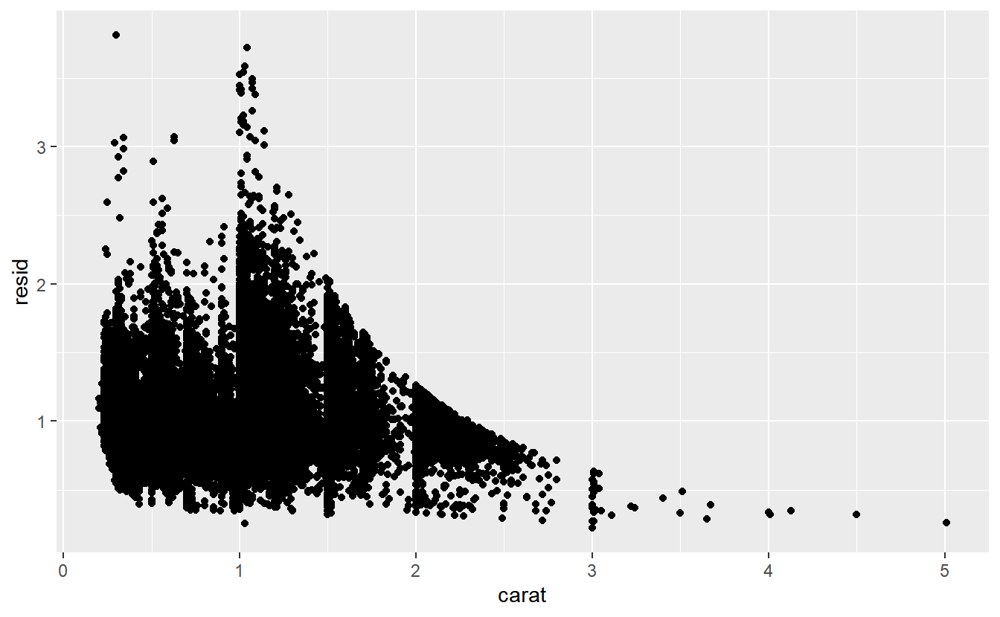
Once you’ve removed the strong relationship between carat and price, you can see what you expect in the relationship between cut and price: relative to their size, better quality diamonds are more expensive.
ggplot(data = diamonds2) +
geom_boxplot(mapping = aes(x = cut, y = resid))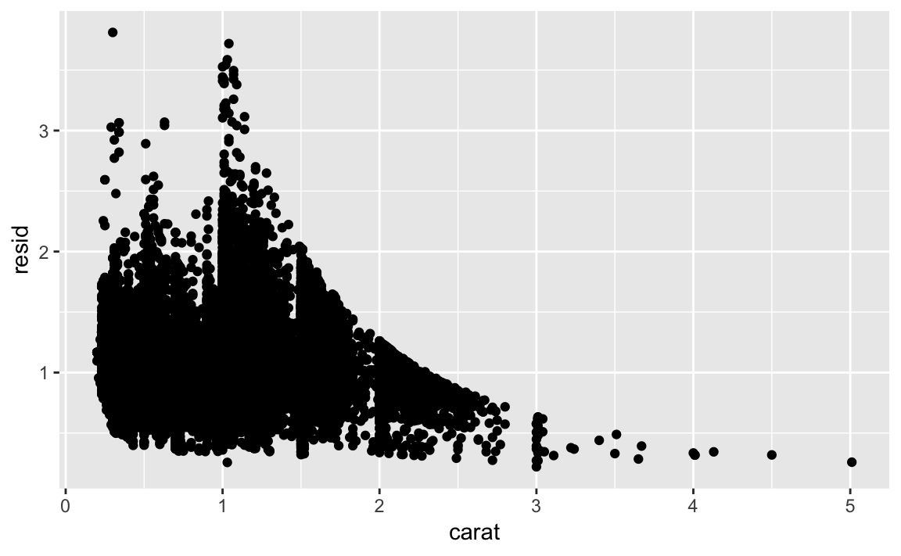
You’ll learn how models, and the modelr package, work in the final part of the book, model. We’re saving modelling for later because understanding what models are and how they work is easiest once you have tools of data wrangling and programming in hand.
7.7 ggplot2 calls
As we move on from these introductory chapters, we’ll transition to a more concise expression of ggplot2 code. So far we’ve been very explicit, which is helpful when you are learning:
ggplot(data = faithful, mapping = aes(x = eruptions)) +
geom_freqpoly(binwidth = 0.25)Typically, the first one or two arguments to a function are so important that you should know them by heart. The first two arguments to ggplot() are data and mapping, and the first two arguments to aes() are x and y. In the remainder of the book, we won’t supply those names. That saves typing, and, by reducing the amount of boilerplate, makes it easier to see what’s different between plots. That’s a really important programming concern that we’ll come back in [functions].
Rewriting the previous plot more concisely yields:
ggplot(faithful, aes(eruptions)) +
geom_freqpoly(binwidth = 0.25)Sometimes we’ll turn the end of a pipeline of data transformation into a plot. Watch for the transition from %>% to +. I wish this transition wasn’t necessary but unfortunately ggplot2 was created before the pipe was discovered.
diamonds %>%
count(cut, clarity) %>%
ggplot(aes(clarity, cut, fill = n)) +
geom_tile()7.8 Learning more
If you want to learn more about the mechanics of ggplot2, I’d highly recommend grabbing a copy of the ggplot2 book: https://amzn.com/331924275X. It’s been recently updated, so it includes dplyr and tidyr code, and has much more space to explore all the facets of visualisation. Unfortunately the book isn’t generally available for free, but if you have a connection to a university you can probably get an electronic version for free through SpringerLink.
Another useful resource is the R Graphics Cookbook by Winston Chang. Much of the contents are available online at http://www.cookbook-r.com/Graphs/.
I also recommend Graphical Data Analysis with R, by Antony Unwin. This is a book-length treatment similar to the material covered in this chapter, but has the space to go into much greater depth.